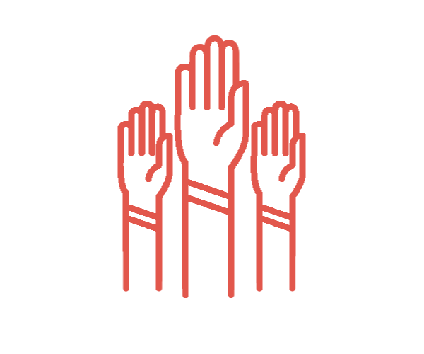

What can someone who wants to help do using HandOut?
HandOut emphasizes local impact. Benefactors can only see the profiles of sick people within a 10-mile radius, allowing benefactors to provide direct services, not just money.
View different profiles, and choose who you want to help! Donate money so that people in need can
buy medicine, visit the doctor, and more.

Volunteer to assist an elderly, handicapped woman who needs help moving around the house, or
volunteer to be a personal nurse to a veteran! There's much you can do.
Many sick people can't afford necessities due to the heavy price of medicine and medical care. You
can help by providing clothes, food, water, and much more!